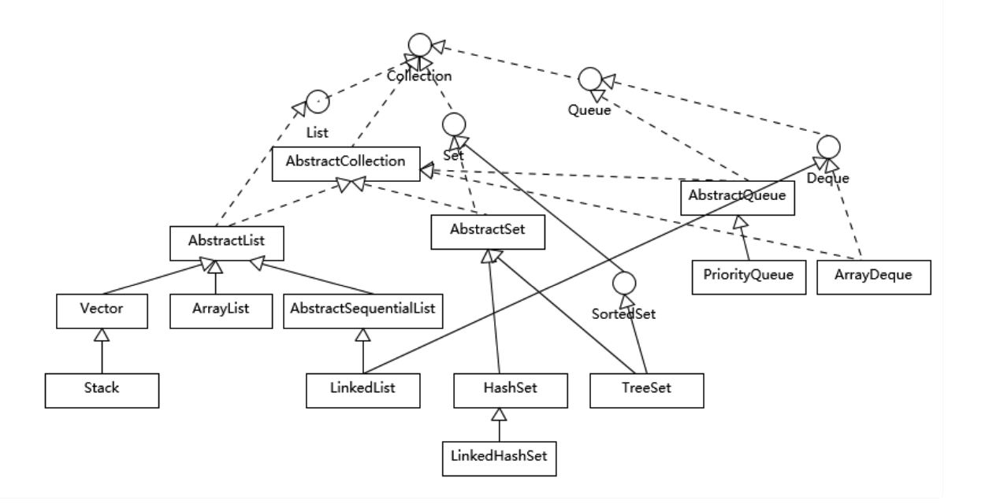
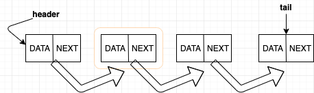

引言
集合，这个我们再熟悉不过了，我们应该用烂了吧。但是你真的很了解它吗？
说集合之前，肯定要撇不开它的’爸爸’ - 数组。
为何数组是集合的’爸爸’呢?
还记得前面章节我们提到的自动拆箱和装箱吗？ 在此之前，如果我们想要存放原始数据类型，我们只能用数组（想想为何?）。看出它诞生比较早&&比较重要吧，
但这还不算完，后面集合的设计也深深收到了数组的影响。
设计者们在开始之处就为数组设计成高效的存储和随机访问的能力，’上天’(设计者)不是万能的，高效的存储和随机访问，从而带来了它致命的硬伤 - 其长度是固定的。
1 | int[] s1 = new int[2]; |
我们来总结下数组的特性，就能看出为何我们有需求要设计数组了。
- 数组有高效的存储和随机访问能力；
- 数组只能存放一种类型数组；
- 数组的长度不可变；
数组是java中内置的数据类型，其存储的数据类型就是其自身类型，如：存储
User，那数组自身就是User的数据（.getClass()），但，不代表其就和User一样的所有的类继承关系，有点绕~ ，看下例子应该就明白了：1
2
3
4
5
6
7
8
9
10
11
12
13
14
15
16
17
18
19
20
21
22
23
public class Demo2 {
public static void main(String[] args) {
User user = new User("neil", 22);
User[] users = new User[2];
// class cn.neilli.corejava.list.User, class [Lcn.neilli.corejava.list.User;
System.out.println(user.getClass() + ", " + users.getClass());
// class cn.neilli.corejava.list.Person, class java.lang.Object
System.out.println(user.getClass().getSuperclass() + ", " + users.getClass().getSuperclass());
}
}
class User extends Person {
private String name;
private int age;
public User(String name, int age) {
this.name = name;
this.age = age;
}
}
class Person {}
集合
上面我们说了，有了自动拆箱和装箱之后，数据存储方式我们就有了集合。
1 | List<int> list = new ArrayList<>(); |
上面这样，是编译不通过的，必须是用Integer，也就是用到了我们前面说的自动拆箱和装箱功能。神奇吧。
什么是集合?
先上菜(网上找的) ->

通过上面经典的一个图，我们可以看出集合严格上说不包括Map，但是网上有很多讲集合也把Map涵盖进来，后面我们也会讲下这次关系。
什么是集合呢？讲集合，离不开Vector、ArrayList、LikedList3兄弟。HashSet由于比较简单和特殊，我们后面会带下。
Vector、ArrayList、LikedList它们3个都有一个父类AbstractList，所以，它们功能比较类似、也是有序集合，都提供了同样的按位置进行定位、添加、删除元素和迭代器相关功能。
1 | public abstract class AbstractList<E> extends AbstractCollection<E> implements List<E> { |
看AbstractList源码可以知道，其迭代遍历是在这里实现的，所以它们这部分功能也是一样的。
既然说了那么多一样，又是同根，为何还要设计3个呢？
存在即合理。它们在线程安全和性能上是有不同的常见的。
Vector
1 | public class Vector<E> |
通过源码，我们可以知悉：
- [大家都知道，不想复制源码了，自己看吧]线程安全；
protected Object[] elementData;本身是通过一个数组来存储数据的；grow()其长度是可以动态扩充的，当不足时会通过数组复制来搞一个新的长数组(每次扩充是1倍的量)；
ArrayList
看懂了Vector源码，其实ArrayList和其差不多，唯一不同的就是它没有线程安全、扩容的算法不一样；
1 |
|
1 |
|
每次扩容是原长度的50%；
总结下ArrayList：
- 比
vector应用更广，建议(务必)没有线程安全要求时，不要用vector，可以考虑ArrayList； - 动态扩容时，每次是原长度的50%；
LinkedList
1 | public class LinkedList<E> |
对的，你没看错，它存储数据不再是数组了，而是链表（双向）。
链表
链表相对于数据组存储数据而言，它是无序的，对内存空间的要求可以是非连续的。在计算中我们称zhe些非连续的内存块为节点(Node)。在单链表中节点不仅要存储数据，还要存储下一个节点的地址，这样就串成了一个链表；
大致如下：

那双向链表就更方便了，每个node不仅要记录下一个node还要记录上一个node，也就是源码中的first、last Node；图就不画了，自己脑补。
那我们继续分析LinkedList源码，看下它是如何添加一个node的。
1 |
|
- add(), 默认是加在最后一个；
- 看上面的注释，应该好理解。
那获取链表的具体位置的node，是咋玩的呢、？
1 | public E get(int index) { |
看上面的代码注释。可以看出其要获取某个node必须遍历链表长度的一半才能获得，但是这么做是为了其能更好的扩容。我们都知道连续的内存空间是通过CPU缓存来实现快速查找的，但是，天然就不具备连续性的链表显然不用使用到CPU的预读能力了，但是其本身突破了大小的限制，就是它的最大优势之一，也是其和那些数组存储的动态集合的最大区别；
链表的增、删的便利性往往是它的陷阱，建议开发者使用它的时候，要充分考虑你是否对内存要求很强。因为其相对于数组多出了指向相邻节点的指针，这就需要额外的内存。对列表的删除和插入也会造成整块的内存申请和释放，所以使用它的生活还是要慎重。
HashSet、HashMap
这块相对简单，自己看下吧。有空我在更新。